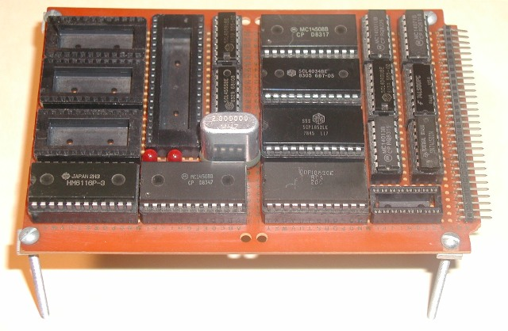

Commodore 64 Add-on
Sometime around 1985 while working at Matrox Electronics in Montreal Canada, Keith White and I
built a couple of add-on cards for the Commodore 64. We called these systems K-BUS (Keith & Ken) cards. T
he first card was an 1802 based system, the second a Z80 based design.
